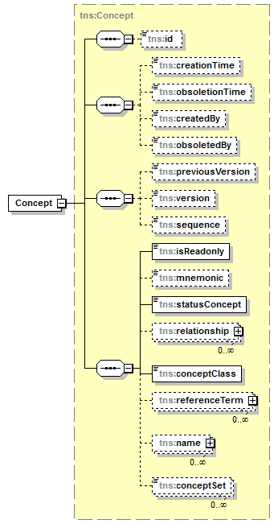

| diagram |  | ||||||
| namespace | http://openiz.org/model | ||||||
| type | tns:Concept | ||||||
| properties |
|
||||||
| children | tns:id tns:creationTime tns:obsoletionTime tns:createdBy tns:obsoletedBy tns:previousVersion tns:version tns:sequence tns:isReadonly tns:mnemonic tns:statusConcept tns:relationship tns:conceptClass tns:referenceTerm tns:name tns:conceptSet | ||||||
| source | <xs:element name="Concept" type="tns:Concept" nillable="true"/> |